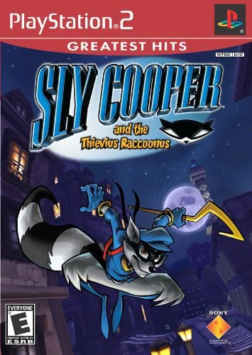
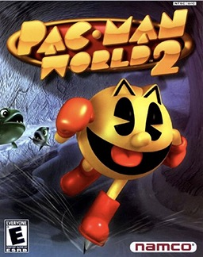
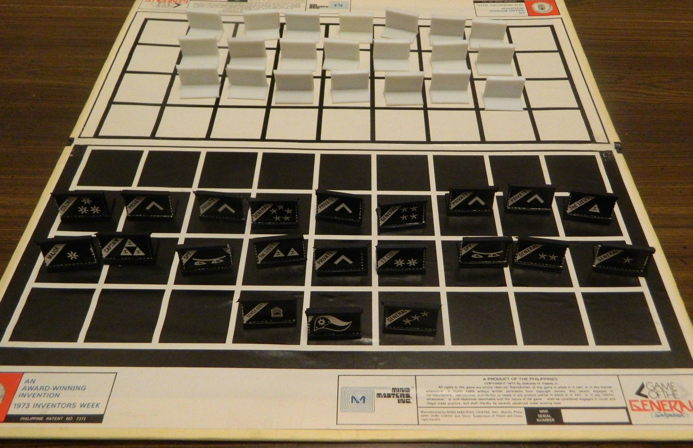

Childhood Years
When I was a child I was into video games. My mom bought me a PS2, and a PSP when she came back from Japan1. My favorite games at the time was Sly Cooper and a 3d Pacman game2. Although they were hard to understand because I was a child and the game was also in Japanese so I had my mom translate the menu text from time to time3. I was very hooked at these games and barely play outside in summer4. When school started my play time became less and less my parents also became strict when it comes to studying so I usually don't have enough time to play5. While my play time with the consoles were less, I found the time to play outside and meet some new kids around my age6. Fortunately enough I also have other interest to keep me entertained in which also led me befriend another kid7. I was able to befriend another kid in my school and one near our house8. We were interested at toy cars and transformers9. Fast forward to 5ft grade10. I asked a friend of mine to teach me how to play chess11. This started me to play competitively for my school on a local tournament12. My most memorable moment, was when I beat multiple highschool student of our school13. The tournament went well and I was able to get to 3rd place14. I also remember that I almost won my last match that could place me to 2nd place15. On 6th grade I joined again on the local tournament16. Unfortunately, I didn't get to to top 317. It was at that grade were I just wanted to play casually18. I still joined the tournament because there are some perks like we can skip classes granted that we're training on the specific sport19. Even then I was still interested in chess but in a casual way instead of tournaments20.



Teenage Years
At this time my interest in video games sparked again1. My parents bought me and my siblings an Xbox console2. I was able to play some different game genre unlike the one's I play in my PS2 and PSP3. I also still play chess at this time4. My school at the time has a yearly school sports tournament5. I decided to join the chess segment of the event since I don't get to play that much anymore unless I join some tournament6. However, unlike the local tournament it's not really required to train since it just a school event so it was easier for me7. I also encountered another board game at the school event which intrigue me8. It was the Game of the Generals9. This was an interesting game for me, 2 players is not able to see their opponents pieces rank and at the start the players can place their pieces anywhere they want10. The game however needs 3 people to play, 2 players and 1 for an arbiter who can see the 2 players pieces rank11. At my 2nd year of high school I got my first smartphone12. I actually had to convince my parent to give me their phone if they are going to change their's so instead of selling they gave it to me13. Because I was very interest in video games it led me too emulation of PSP games14. That discovery was like goldmine for me because I was able to play games that I haven't even when I had a PSP15. A friend of mine also introduce me to watch anime16. Fast forward to my senior high days, I had to change school because there is no IT course on my old school17. I picked IT because I was interested in computers18. This course was also my first introduction to programming19. Surprisingly I was able to keep and I did decent in terms of grades20.


College Years
After graduating senior high I had no idea what college to pick1. For starters I handed necessary information to UP, which I doubt I would get in but I still did it2. Then I tried applying to Bulacan college3. Unfortunately I forgot the date of the entrance exam and so my admission got voided4. I tried FEU but their admission due date already passed and then father suggested I try UE4. Fortunately the due date for admission hasn't passed and there was no exam5. At this point I already know the course I wanted to go and that was Computer Science6. I followed the admission process paid my tuition fee7. The funny thing about this is that I haven't gone to UE even once till my 2nd year 2nd sem8. Online classes were pretty boring9. Honestly most of the classes I was spacing out and scrolling through social media10. I did pretty well surprisingly and didn't fail any subjects11. Granted that I have to self study a bit more because most of the time I wasn't listening12. Online exam has some strict rules too but is understandable13. What I don't like however on online exams is that most of the teachers always lock previous answers14. Paper exams was much easier in that regard and saves so much time, because if I don't know the answer on a question I'll just move on for now and come back to it later in case I remember the answer but with locking questions on online exams I had to spend so much time on just one question before I can move on15. That kind feature honestly stresses me out because time is ticking and I can't answer other questions without doing the current question even if I remember the answer after pressing next I can't do anything about it16. Now that it is face-to-face classes I am hoping that most teachers will not lock previous answer17. During online classes I discovered a 3d application called Blender18. Because of youtube algorithm for video suggestion I came across this app19. I enjoyed creating 3d models and decided to make it my hobby and maybe be good enough to even sell my creations20.
Go to top